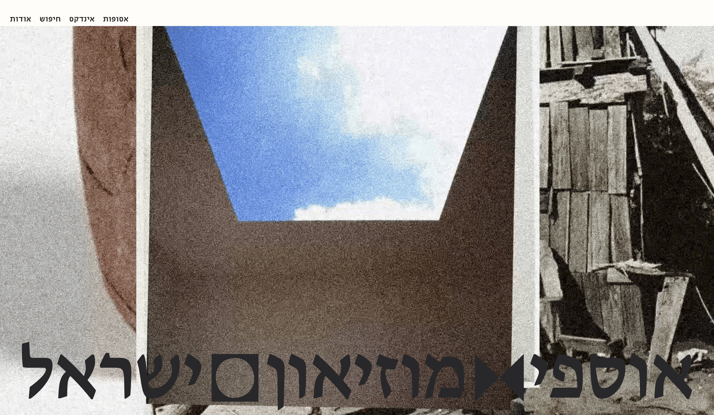
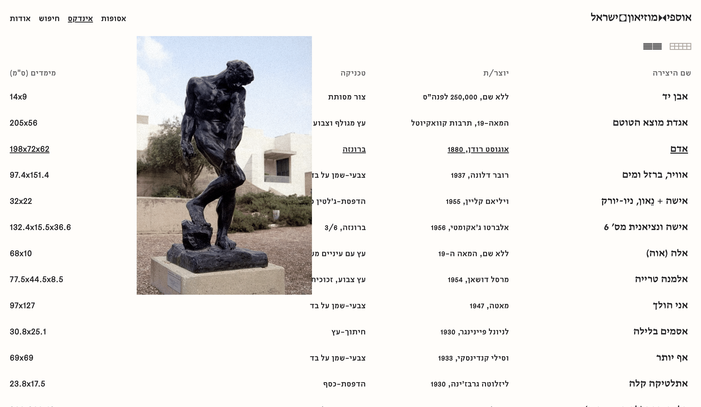
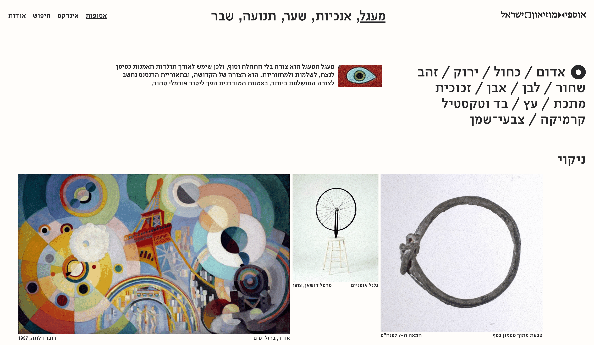
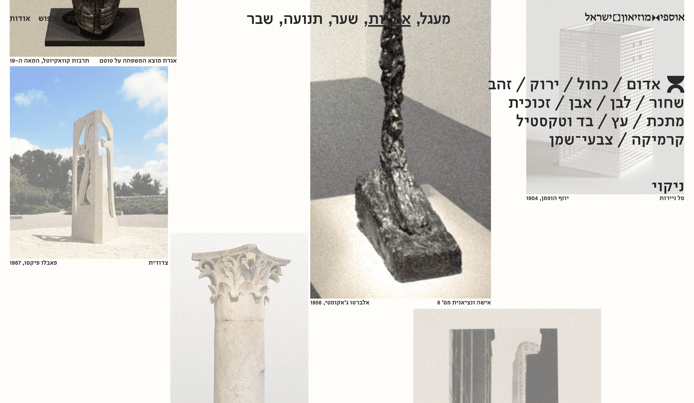
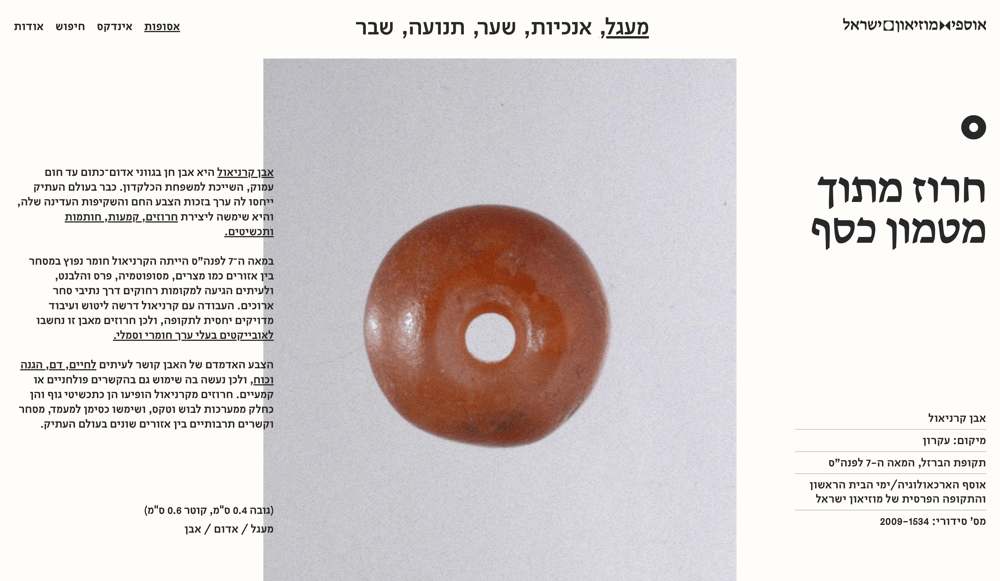
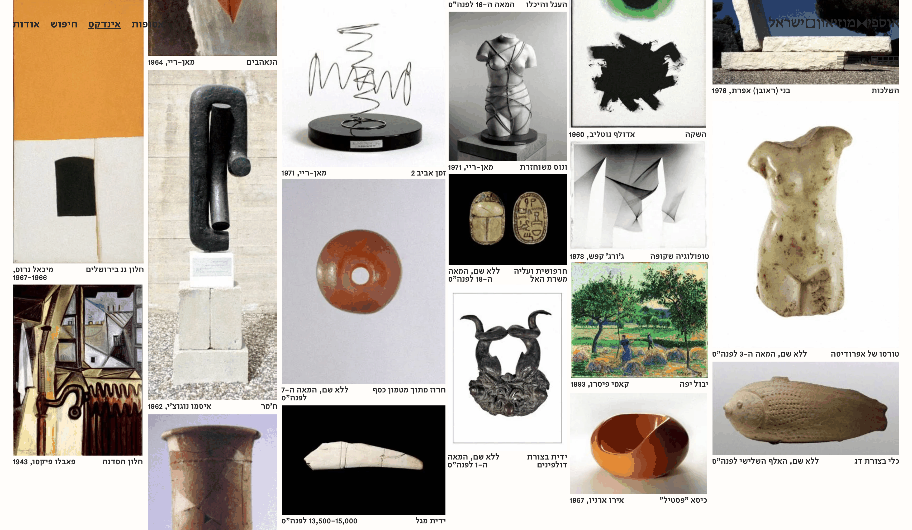

Israel Museum Index
A conceptual interactive index of the Israel Museum collection, organized by five visual motifs instead of period and place.
Course: Interactive Index Design Studio, Third-year (2026) Mentor(s): Maayan Levitsky, Yarin Ben-Hemo
The original museum’s site sorts its collection by period and fixed categories.
I chose to organizes it by visual motifs instead.
I curated five basic motifs: circle, verticality, gate, motion and fracture. In some works the motif was the artist’s intention, in others, it is my curatorial choice. The site holds 150 works in total.
Layout as Curation
The works are the main object, so the interface stays neutral, in grey and cream.
Masada adds a serif that refers to the Israel Museum, The Basics is used for the rest. Typography is set over the works without covering them. Hovering a filter rearranges the works. All 150 work pages and five motifs are live.






Next Project →